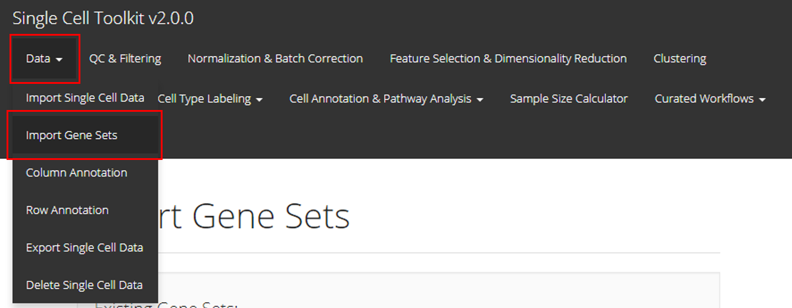
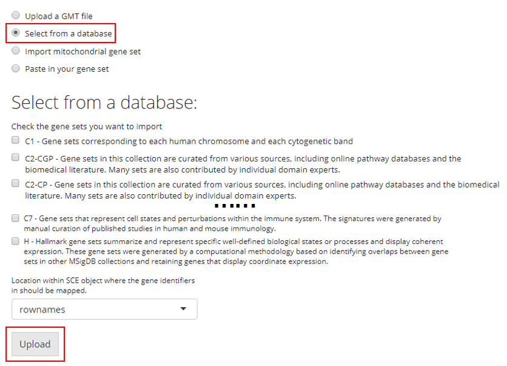

Introduction
Users can import gene sets to use in later steps of the toolkit’s pipeline, including quality control (QC) and EnrichR analysis. SCTK mainly supports importing genesets from a GMT file, the MSigDB database [1], or manually prepared list.
To view detailed instructions on how to import genesets, please select ‘Interactive Analysis’ for importing through the shiny application or ‘Console Analysis’ for importing through the R console from the tabs below:
Workflow Guide
Entry of the panel

In the UI of SCTK, users can import gene sets to use in later steps. The UIs are implemented in the page that can be entered through the links, as shown in the screenshot above.
Import Genesets
There are four ways to import gene sets, as described below:
1. Import Gene Sets from a GMT File
The first option is to upload the GMT file detailing a gene set. For this option, users must provide a GMT file through the file input “Choose GMT File”; a text collection name at “Collection Name”. If the collection name entered already exists in current session, the gene set from the GMT file will be added to that collection. Otherwise, a new collection with the given name will be created. Finally, users must click “Upload” to finish the procedure.

2. Select from a Database
SCTK also has a database of gene sets that users can choose from. For this option, the user must simply select the gene sets they would like to upload and click “Upload”. A brief description of each gene set is provided in the checklist.

3. Import Mitochondrial Gene Set
SCTK has built-in curated mitochondrial gene sets for human and mouse, and these gene sets can be used in quality control (QC) to filter out the potentially apoptotic or lysing cells. Users have to choose the Species that matches to the uploaded dataset. Users also need to have the prior knowledge of the ID Type used to identify the features in the dataset. SCTK supports using gene symbols, Entrez IDs, Ensembl IDs and Ensembl transcript IDs. Users need to choose the one that matches to the dataset.

4. Paste in Gene Sets
Users also have the option to paste their gene set into a text box. In order to do so, the user must paste their gene set into the provided text box and then provide a collection name to create a new collection. If there are already gene sets imported, the user can choose an existing collection to add their pasted gene set into. Then the user must click “Upload.”

Map Gene Sets to Specific Feature IDs
There is an additional selection input labeled with “Location within SCE object where the gene identifiers in should be mapped”, placed above the “Upload” button as already shown in screenshots above. This specifies the feature IDs stored in the imported single-cell dataset, to which the gene identifiers in the uploaded gene sets will be mapped. For example, if the uploaded gene sets are presented by gene symbols, users must make sure the selection here is pointing to gene symbols instead of ENSEMBL IDs. Most of the time, “rownames” is the default feature ID of the imported single-cell dataset.
SCTK handles genesets by using a GeneSetCollection object, supported by the GSEABase library. [2] We provide five functions that converts gene set/list from different sources into a GeneSetCollection object and store it in the metadata slot of an SingleCellExperiment object. Downstream analysis such as QC and pathway analysis will then be able to use the data.
importGeneSetsFromCollection()importGeneSetsFromGMT()importGeneSetsFromList()importGeneSetsFromMSigDB()importMitoGeneSet()
For the usage and detail of these functions, please click on the function name and there will be a reference page for each of them.